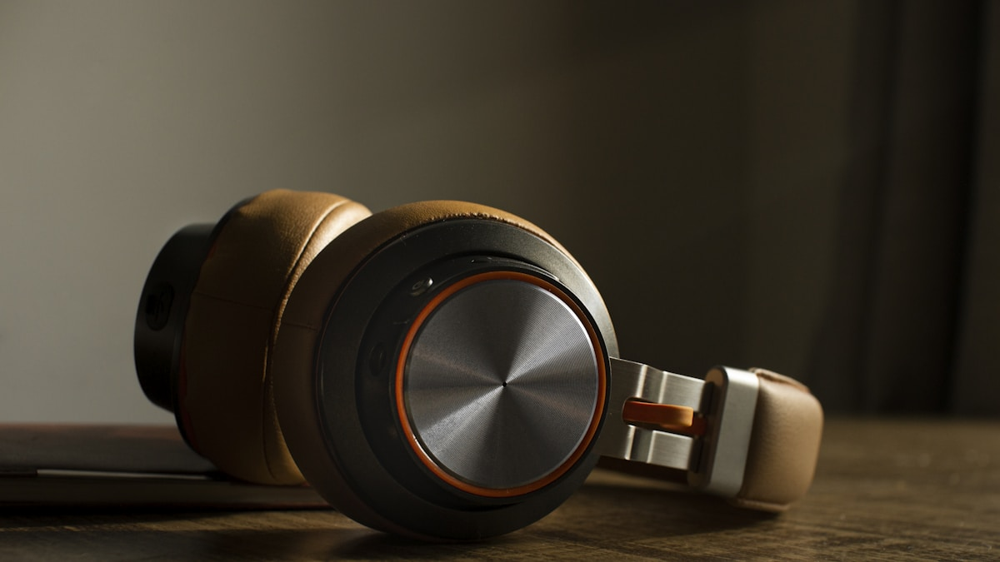

Our top guide this week
The Best Air Purifiers for Bedrooms, Pets, and Open Living Rooms
We looked past vague clean-air claims and focused on CADR, filter cost, noise, long-term complaints, and the small design choices that decide whether you keep a purifier running.
Read the full guide

 Health & Lifestyle
Health & Lifestyle